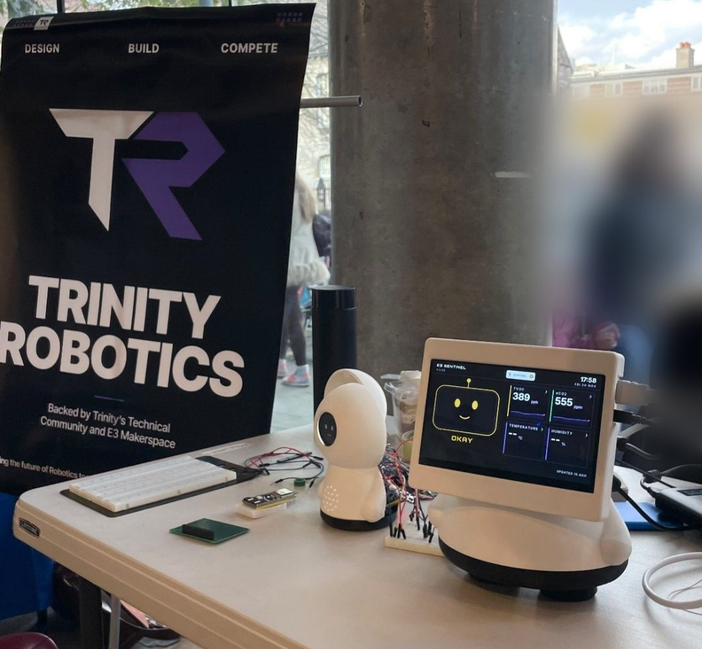

Projects
Three hands-on builds so far: a robot duo for the E3 MakerSpace and two RC gliders, one finished and one in progress.
-

Sentinel robot
A robot duo that monitors the MakerSpace for smoke, solder fumes and humidity. I did all the CAD and manufacturing.
-

2 m glider
A 2 m RC glider I built on my own, from a hand-made airfoil to a two-part balsa and foam wing.
-
TODO: photo or CAD render
3 m glider
A 3 m FPV glider for long-distance area investigation, with airfoils I designed and analysed myself.